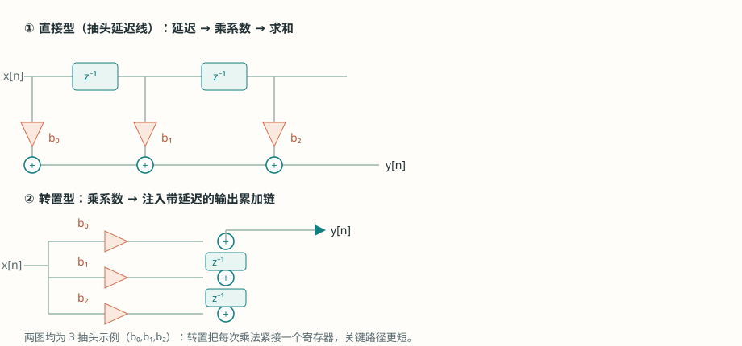
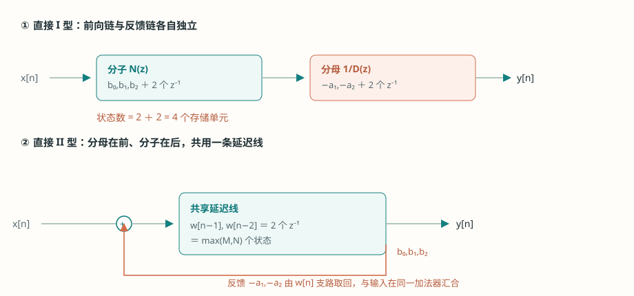

Signal · System · Insight / 11
滤波器结构：同一个 H(z)，为什么实现方式会决定成败
在无限精度下等价的结构，落到有限字长硬件上会出现完全不同的量化误差与稳定性行为。
同一组 b、a，为什么换一种画法就崩了？
你已经会用 FIR 与 IIR 方法设计出零点、极点都合格的传递函数。可是把同一组 b、a 下载到 16 位定点 DSP 后，输出却可能偏离仿真结果、甚至在无声输入时持续振荡。系数没变、算法没变，变的只是用哪种信号流图把差分方程写成乘加运算。
在无限精度下，任何实现同一个系统函数 的结构都是等价的。差别出现在有限字长：每个乘法结果要舍入、每个状态变量要存储、每个系数要量化。不同结构的误差传播路径不同，于是量化灵敏度、舍入噪声与稳定性出现数量级的差异。
本章的最小模型：把一次乘加视为“精确乘、有限字长加”，把系数视为设计值的近似。然后问三个可测问题：极点是否仍落在单位圆内？舍入噪声能否自激？同样的字长下哪种结构误差更小？
FIR：直接型与转置型
因果 FIR 的差分方程是一段有限卷积：系数 b[k] 与最近 M 个输入样本相乘后求和。
式（1）：M 为系数个数，阶数为 M−1；范围外输入按零延拓。
直接型（抽头延迟线）就是这句话的直译：一条 z⁻¹ 延迟链把 x[n] 依次右移，每个抽头乘各自的 b[k]，再送入一个为所有乘积求和的加法器。它的关键路径包含“延迟 → 乘 → 逐级加”。
转置型来自信号流图的转置规则：把所有支路箭头反向，分叉点与求和点互换。它给出同一个 ，但结构变了——每个 b[k] 乘法把结果注入一条沿输出方向传递的累加链。FPGA 实现里转置型的优势是：每次乘法后立刻进入一个寄存器，关键路径短、容易加流水线，适合高频时钟。

注意：转置不改变传递函数，只改变数据流。所以两者冲激响应完全相同；差别在硬件时序、寄存器数量与舍入误差的分配方式，而不是数学结果。
IIR：直接 I 型与直接 II 型
IIR 既有前向的零点部分，又有反馈的极点部分。用 b、a 表示、约定 a[0]=1 时，系统函数写成两个多项式的商：
式（2）：约定 a[0]=1；反馈极点是分母多项式的根。
直接 I 型把两个多项式分开实现：先过前向延迟链算零点部分，再过反馈延迟链算极点部分。它需要 M+N 个延迟单元（状态变量），但两个延迟链互不共享。
直接 II 型（典范型）利用了除法与乘法的可交换性：把分母先乘到中间变量 w[n] 上，再让 w[n] 过分子部分。因为两条链在同一顺序上工作，它们可以共用一条延迟线，状态数降到 max(M,N)。这正是“典范”——用最少的状态实现给定的传递函数。
式（3）：w[n] 是内部状态，不是输出；它能显著改变溢出与舍入的分布。

级联与并联：为什么工程偏爱二阶节
高阶直接型把全部极点塞进一个 N 阶多项式。系数量化后，这个多项式的根可能整体漂移。工程上更稳健的做法是先把 因式分解，再逐节实现。最常见的分解是二阶节级联（biquad cascade）：
式（4）：共享增益 g；每个二阶节只负责一对共轭极点。
关键点是每个二阶节的极点只由本节系数决定，量化不会把一个节的误差“传染”给其他节。代价是乘积的取值顺序与增益分配会影响内部信号的动态范围——中间某节可能把信号放大很多倍而造成定点溢出或舍入噪声被放大。所以尾部节点顺序、配对与缩放（scaling）是真实工程参数，不是随便排的。
另一种分解是并联型：把 做部分分式展开，各节共用同一个输入、输出相加。并联的各节误差不沿信号链逐级传递，但在零点附近可能发生毁灭性抵消。级联与并联都没有绝对优势，要结合系数分布与溢出预算选择。
格型与反射系数
格型结构用一组反射系数 而不是直接系数来描述滤波器。它能实现任意 FIR/IIR 传递函数，并且有一系列性质：稳定性判据简单（所有 的模小于 1 即稳定）、对系数量化不敏感、便于递推更新。代价是乘法次数通常多于直接型，且需要额外步骤把 b、a 转成反射系数。
格型最早流行于线性预测编码（LPC）与语音压缩：反射系数的物理意义对应声道分段反射，量化时可直接限制在开区间内以保稳定。它也是后面自适应滤波器与格型预测器的基础。
系数量化、极点漂移与极限环
定点实现里每个系数都只能取有限个离散值。把一个二阶节的极点写作 ，则分母系数与极点的关系是：
式（5）：对分母多项式 D(z)=1+a₁z⁻¹+a₂z⁻²，极点为 r e^{±jθ}。
当 a2 存在量化误差 时，极点半径的变化近似为：
式（6）：高 Q（r→1）时同样的系数误差带来更大的半径偏移。
这解释了两件事。第一，窄带高 Q 滤波器对系数量化特别敏感：即使 很小，半径也可能贴近或越出单位圆。第二，高阶直接型把很多极点耦合在同一个多项式里，一个系数误差会同时移动所有根；因式分解成二阶节后，每个极点对只受自己那一节系数的控制。
极限环（limit cycle）是另一类有限字长现象：乘法与加法后的舍入是一个非线性环节，即使输入严格为零，滤波器状态也可能无法回到零，而在小范围内持续周期性振荡（零点输入极限环 / 颗粒极限环）。它无法用任何线性时不变理论预测，只能通过定点仿真与真实硬件测试发现。常见对策包括：提高累加器与状态存储位宽、使用带舍入的溢出保护、或改用对量化不敏感的结构（如格型）。
边界提醒：“用二阶节级联”不是无条件更优。它降低极点系数量化灵敏度，但引入了增益分配与中间溢出问题；具体收益必须在目标字长下用定点仿真、而非仅看浮点曲线，来确认。
交互：量化位数与极点半径
下面固定一个高 Q 二阶节（极点半径设计值 0.98、归一化角频率 0.2π），只改变系数的定点小数位宽 b，观察 a1、a2 量化后极点单位圆与半径的变化。
可交互实验：极点对系数量化的敏感度
极点由二次方程根公式直接计算，不依赖网络与浮点库；滑块改变的是系数存储精度，不是设计值。
把 b 调小会看到两个量化极点既沿幅角移动、也沿半径移动，且半径可能在 r=1 附近摆动。这正是真实 DSP 上“为什么同一组系数会失稳”的最小可观察机制。
from math import cos, pi, sqrt
def poles(a1, a2):
disc = a1 * a1 - 4 * a2
if disc >= 0:
return ((-a1 + sqrt(disc)) / 2, (-a1 - sqrt(disc)) / 2)
re, im = -a1 / 2, sqrt(-disc) / 2
return (complex(re, im), complex(re, -im))
def quantize(x, bits):
scale = 2 ** bits
return round(x * scale) / scale
r, w0 = 0.98, 0.2 * pi
a1, a2 = -2 * r * cos(w0), r * r
qa1, qa2 = quantize(a1, 8), quantize(a2, 8)
print(round(max(abs(p) for p in poles(a1, a2)), 6),
round(max(abs(p) for p in poles(qa1, qa2)), 6))完整可运行测试（11_structures.py）用标准库验证了两件事：直接型与转置型冲激响应完全一致；当极点为共轲复数时半径恰为 ，其量化偏移与式（6）一阶估计吻合（两者之差小于实际偏移的 5%）。
结构选型的边界
- 同一 的多种实现仅在无限精度下等价；有限字长下它们是不同的数值系统。
- 延迟单元最少（典范型）不等于数值最优；状态少但极点耦合度高。
- 二阶节级联降低极点量化灵敏度，但增益分配与中间溢出必须单独验证。
- 极限环是非线性舍入现象，不能用线性稳定性/Nyquist 分析预测。
- 转置型改变数据流而非传递函数；它优化的是时序与寄存器，不是频率响应。
自检：若一个二阶节的 a2 设计值为 0.9604（r=0.98），用 6 位小数存系数，半径最多可能偏移多少？这种偏移会让极点离开单位圆吗？
参考资料与接口
- MIT OCW · Discrete-Time Signal Processing：直接型、级联型、并联型与格型的等价性。
- SciPy · sosfilt / tf2sos：二阶节级联的数据结构与实现接口。
- SciPy · sosfreqz：按二阶节计算频率响应。